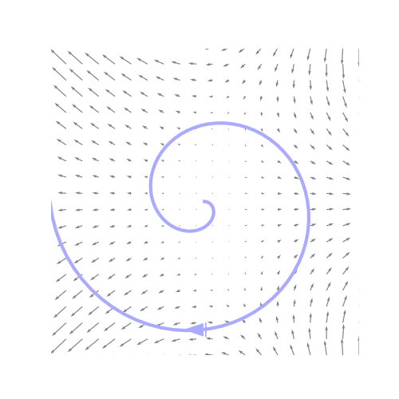

Drew Youngren dcy2@columbia.edu
Compute the path integral $\int\limits_C \left(x - \frac{y^3}{3}\right)\,dx - xy^2\,dy$ over the the path below.
A simple closed curve $C$ is a curve with a parametrization $\vec r(t), a\leq t \leq b$ such that
In $\RR^2$, such a curve surrounds a region $D$. We write \[C = \partial D\] meaning "$C$ is the boundary of $D$."
Compute the line integral of \[\vec F(x,y) =\langle xy - y^2 , x^2\rangle\] on the triangular curve connecting $(0,0)$, $(2,0)$, and $(3,2)$ counterclockwise.
Say, $ \langle P, Q \rangle = \langle xy - y^2 , x^2\rangle$. Then,
\[\frac{\partial Q}{\partial x} - \frac{\partial P}{\partial y} = 2x - (x - 2y) = x + 2y \]
\[ \oint_T P\,dx + Q\,dy = \int_0^2 \int_{\frac32 y}^{2 + \frac12 y} (x + 2y)\,dx\,dy = 6 \]
Check by integrating each piece.
Bot $\langle 2t, 0 \rangle$: $\displaystyle \int_0^1 ((2t)0 - 0^2)2\,dt + (2t)^2(0)\,dt + = 0$
R $\langle 2 + t, 2t \rangle $: $\displaystyle \int_0^1 (2+t)(2t) - (2t)^2 + (2 + t)^2 2\,dt = 14$
L $\langle 3 - 3t,2 - 2t \rangle $: $\displaystyle \int_0^1 ((3 - 3t)(2 - 2t) - (2 - 2t)^2)(-3) + (3 - 3t)^2 (-2)\,dt = -8$
\[\begin{align*}\oint_{\partial D} P\,dx &= \iint_D -\partial_y P \,dA \\ \oint_{\partial D} Q\,dy &= \iint_D \partial_x Q \,dA \end{align*}\]
Consider only the first case and that $D$ is the region \[ \begin{align*} g(x) &\leq y \leq f(x) \\ a &\leq x \leq b \\ \end{align*}\]
Can we determine the surface area of the Jackie Onassis Reservoir if it's fenced off?
Yes, with a GPS watch.
Consider the vector field $\vec F(x,y) = \langle 0, x \rangle$.
\[ \oint\limits_{\partial R} \vec F\cdot d\vec r = \oint\limits_{\partial R} x\,dy = \iint\limits_R 1\,dA = \text{Area}(R) \]
In what case do both Green's and the FTLI apply to a line integral $\int_C \vec F\cdot d\vec r$?
$C$ is closed, and $\vec F$ is conservative.
Let $B_r$ be a small ball of radius $r$ around a point $(a,b)$. For a continuous function, \[ h(a,b) = \lim_{r\to 0} \frac{\iint_{B_r} h\,dA}{\text{Area}(B_r)}\]
That is, over smaller and smaller regions, the average value converges to the value at that point.
Let $B_r$ be a small ball of radius $r$ around a point $(a,b)$. Then,
\[ \left(\frac{\partial Q}{\partial x} - \frac{\partial P}{\partial y}\right)(a,b) = \lim_{r\to 0} \frac{\iint_{B_r} \left(\frac{\partial Q}{\partial x} - \frac{\partial P}{\partial y}\right)\,dA}{\text{Area}(B_r)}\]
Let $B_r$ be a small ball of radius $r$ around a point $(a,b)$. Then,
\[ \left(\frac{\partial Q}{\partial x} - \frac{\partial P}{\partial y}\right)(a,b) = \lim_{r\to 0} \frac{\oint_{C_r} P\,dx + Q\,dy}{\text{Area}(B_r)}\]
Let $B_r$ be a small ball of radius $r$ around a point $(a,b)$. Then,
\[ \left(\frac{\partial Q}{\partial x} - \frac{\partial P}{\partial y}\right)(a,b) = \lim_{r\to 0} \frac{\oint_{C_r} P\,dx + Q\,dy}{\text{Area}(B_r)}\]
That is, the integrand of Green's Theorem is the "circulation density" of the vector field $\langle P, Q \rangle$. This is known as the scalar curl.
Green's Theorem works for non-simply-connected domains, provided the boundary components are oriented correctly.
Let $\vec N$ be the outward-oriented unit normal vector to a closed curve.
\[ \begin{align*}\vec T\,ds &= \langle x'(t), y'(t) \rangle \,dt \\ \vec N\,ds &= \langle y'(t), -x'(t) \rangle\,dt \end{align*} \]
\[ \oint_{\partial D} \vec F \cdot \vec N\,ds = \oint_{\partial D} (-Q)\,dx + P\,dy \]
\[ = \iint\limits_D (P_x + Q_y)\,dA \]
Compare the methods of computing the integral \[ \oint\limits_C \left \langle 3, - \frac{x^2}{2} \right \rangle \cdot d\vec r \] around the boundary of the unit square $0\leq x \leq 1$, $0 \leq y \leq 1$.